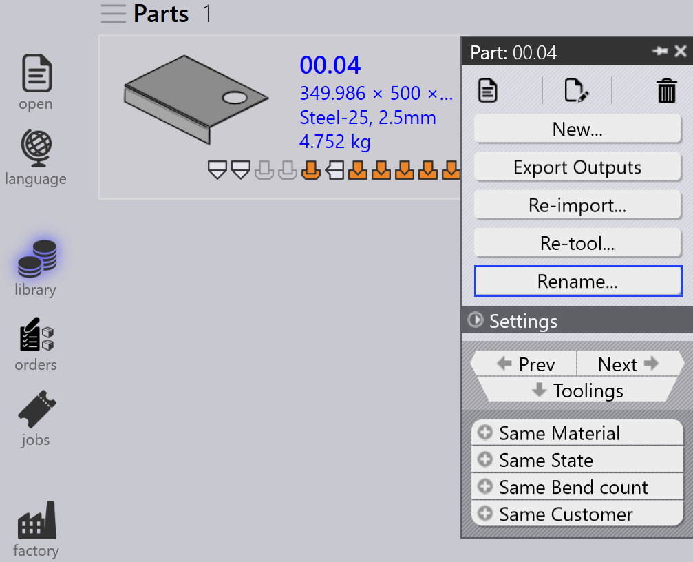

Teile-Panel
Dieser Abschnitt erläutert teilebezogene Aktionen wie Erneut importieren…, Neu rüsten…, Umbenennen…, Ausgänge exportieren usw., die zur Verwaltung von Teileinstanzen verwendet werden.

|
|


Erneut importieren…
-
Klicken Sie mit der rechten Maustaste auf ein beliebiges Teil und wählen Sie Erneut importieren….

-
Alle Werkzeugbearbeitungsinstanzen des ausgewählten Teils auf allen Maschinen werden gelöscht, einschließlich automatisch und manuell erstellter Instanzen.
-
Vorhandene Ausgabedateien (CAD, Biegen und Schneiden) werden entfernt.
-
Die Teile werden erneut importiert, und eine neue CAD-Validierung sowie Werkzeugbearbeitung werden für alle Maschinen angewendet.
-
Neue Ausgabedateien werden basierend auf dem aktualisierten Werkzeugbearbeitungsergebnis erstellt.
Neu rüsten…
-
Klicken Sie mit der rechten Maustaste auf ein beliebiges Teil und wählen Sie Neu rüsten….

-
Alle Maschinen sind standardmäßig aktiviert und nach Laser, Stanzen, Panel und Abkantpresse gruppiert.
-
Klicken Sie auf OK, um fortzufahren. Dadurch werden sowohl automatisch als auch manuell erstellte Instanzen für die ausgewählten Maschinen entfernt und die zugehörigen Ausgabedateien gelöscht.
-
Wenn das Kontrollkästchen Bestehende Ausgänge beibehalten aktiviert ist, werden nur Teile erneut bearbeitet, deren Ausgaben zuvor entfernt wurden. Andere Ausgaben bleiben unverändert. Wenn es deaktiviert ist, werden alle Ausgabedateien für die ausgewählten Maschinen entfernt und während der erneuten Werkzeugbearbeitung neu generiert.
|
Umbenennen…
Dieser Abschnitt erläutert, wie Sie ein oder mehrere Teile in TruSmartCAM umbenennen.
-
Klicken Sie mit der rechten Maustaste auf das Teil und wählen Sie Umbenennen….

-
Ein Bestätigungsdialog zur Umbenennung erscheint und zeigt den aktuellen Teilenamen an.
-
Geben Sie den neuen Namen ein und klicken Sie auf das Häkchen-Symbol ✓ zur Bestätigung, oder klicken Sie auf das Kreuz-Symbol ✗, um den Umbenennungsvorgang abzubrechen.

-
Um mehrere Teile umzubenennen, wählen Sie alle gewünschten Teile aus, klicken Sie dann mit der rechten Maustaste auf eines davon und wählen Sie Umbenennen….
-
Ein Bestätigungsdialog erscheint mit der Gesamtanzahl der ausgewählten Teile.
-
Geben Sie für jedes Teil den neuen Namen ein und klicken Sie auf das Häkchen-Symbol ✓, um einzeln zu bestätigen.
-
Wenn ein Teil versehentlich ausgewählt wurde, klicken Sie auf das Kreuz-Symbol ✗ zum Abbrechen. Alternativ können Sie mit der rechten Maustaste auf das Teil klicken und Umbenennen abbrechen wählen, um die Umbenennung zu überspringen.
Ausgänge exportieren
Diese Option exportiert die Teileausgabe an das in Werkseinstellungen konfigurierte Ziel. (Siehe Bend Settings und Cut Settings)
Der Ausgabeort wird separat für Biegen, Falten und Schneiden in den jeweiligen Ausgabeeinstellungen festgelegt. Alle mit Biege-, Falz- und Schneidvorgängen verbundenen Werkzeugbearbeitungen werden für das gesamte Teil exportiert.

Wie unten dargestellt, werden die exportierten Dateien im angegebenen Ordner
gespeichert (z. B. C:\PraxData\Out\Reports).

| Die exportierten Dateien hängen vom Vorgangstyp ab. Für Biege- und Falzvorgänge werden NC-Dateien und Berichte generiert. Für Schneid- und Stanzvorgänge werden nur die Teiledateien exportiert. |
Material zuweisen
Teile mit dem Status Material nicht zugeordnet müssen aktualisiert werden, bevor sie weiterverarbeitet werden können. Die folgenden Schritte erläutern, wie Sie Material zuweisen.
-
Klicken Sie mit der rechten Maustaste auf das Teil, das den Status Material nicht zugeordnet anzeigt, und wählen Sie Material zuordnen.

-
Das Fenster Material zuordnen wird geöffnet.

-
Der Dialog enthält vier Bereiche:
-
Vorschläge - Schlägt automatisch Rohmaterialien basierend auf der Materialstärke des importierten Teils vor.
-
Alle Materialien - Listet alle in TruSmartCAM definierten Materialtypen auf.
-
Alle Rohmaterialien - Zeigt alle im System verfügbaren Rohmaterialien an.
-
Verwendete Rohmaterialien - Zeigt die zuletzt verwendeten Rohmaterialien für einen schnellen Zugriff an.
-
-
Sie können das Feld Suche… (Strg+F) oben verwenden, um Materialien schnell zu finden. Geben Sie beispielsweise „steel" ein, um alle passenden Materialien in den drei Bereichen anzuzeigen.
-
Wählen Sie aus der gefilterten Liste das gewünschte Material (z. B. Steel-25) aus der Rohmaterial-Liste aus.
-
Das ausgewählte Material wird dem Teil zugewiesen.
Walzrichtung
Walzrichtung bezieht sich auf die Ausrichtung der Walzrichtung in einem Teil, die beeinflussen kann, wie das Teil geschnitten und verarbeitet wird. Mit dieser Option können Sie die Walzrichtung für ein Teil in der Teilebibliothek festlegen. Basierend auf der ausgewählten Richtung wird das Teil in der korrekten Ausrichtung zum Schneiden auf den verfügbaren Maschinen platziert.
-
Klicken Sie mit der rechten Maustaste auf eine beliebige Teilekachel in der Teilebibliothek oder im Job-Fenster.
-
Wählen Sie die bevorzugte Walzrichtung:
-
Keine
-
Horizontal
-
Vertikal

-
-
Das Teil wird automatisch für alle verfügbaren Schneidmaschinen basierend auf der ausgewählten Walzrichtung erneut bearbeitet.
-
Die Teilekachel zeigt die ausgewählte Walzrichtung wie unten dargestellt an: